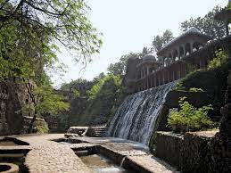

Chandigarh
Food:
The most popular street food in India, Pav Bhaji is a thick vegetable curry, topped with butter, and served with
soft bread. The ones that are prepared in North India is more spicy and more butter.
The red coloured bhaji when had with crispily fried bread
makes it a favourite snack of Chandigarh.
Vegetation:
The prominent among them are : Acacia catechu (Khair), Acacia modesta (Phulai), Acacia Arabica (Kikar),
Acacia leucophloea (Raeru), Dalbergia sisoo (Shisham), Anogeissus latifolia (Chhal), Azadirachta indica (Neem)
, Bombax ceiba (Semal), Butea frondosa (Dhak), Bauhinia racemosa (Kachnar), Emblica officinalis
Climate:
Climate. Chandigarh has a humid subtropical climate (Köppen: Cwa) characterised by a seasonal rhythm:
very hot summers, mild winters, unreliable rainfall and great variation in temperature (−1 °C to 46 °C OR 30.2 °F to 114 °F).
The average annual rainfall is 1110.7 mm. ... Temperatures generally vary between 40 and 42 °C.